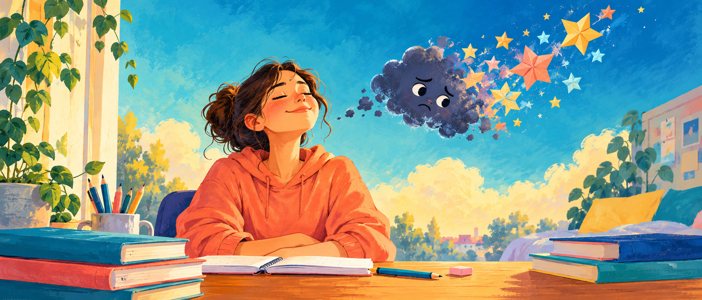

Vücutta
Kalp hızlı atabilir, eller terleyebilir ya da karnında kelebekler uçuşabilir.
Sınav heyecanı bazen beyninin “Bu benim için önemli!” deme şeklidir. Onu fark et, küçük adımlarla sakinleş ve bildiklerine yer aç.

Önce kendini dinle
Herkeste aynı olmayabilir. Birkaç işaret fark etmek, kendine kızmak yerine destek bulmana yardım eder.
Kalp hızlı atabilir, eller terleyebilir ya da karnında kelebekler uçuşabilir.
“Ya yapamazsam?” düşüncesi dönüp durabilir; bildiklerin bir anlığına aklına gelmeyebilir.
Dersin başına oturmak zorlaşabilir, ertelemek ya da sürekli kontrol etmek isteyebilirsin.
Küçük adım, büyük destek
Hepsini aynı anda yapmak zorunda değilsin. Sana uyan bir tanesini seçip dene.
“Matematik çalışacağım” yerine “10 soru çözüp kontrol edeceğim” de. Sonra kısa bir mola ver.
“Kesin yapamayacağım” yerine: “Şu an zorlanıyorum; bir sorudan başlayabilirim.”
Uyku, su, düzenli yemek, hareket ve keyif aldığın molalar beyninin takım arkadaşıdır.
Birlikte deneyelim
Ayaklarını yere koy. Omuzlarını serbest bırak. Nefesini zorlamadan, rahatça alıp ver. Daire büyürken al, küçülürken ver. İstersen istediğin an durabilirsin.
Başlamak için düğmeye bas; nefesi tutmak gerekmiyor.
Şimdi bir yudum su, bir nefes ve sana iyi gelen minicik bir adım.